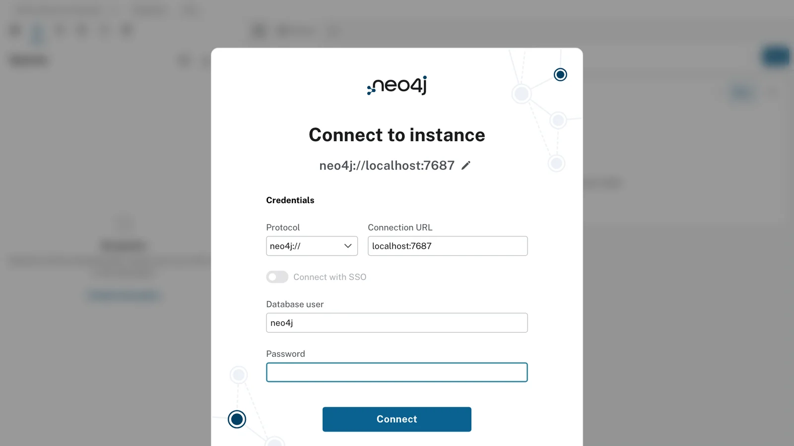
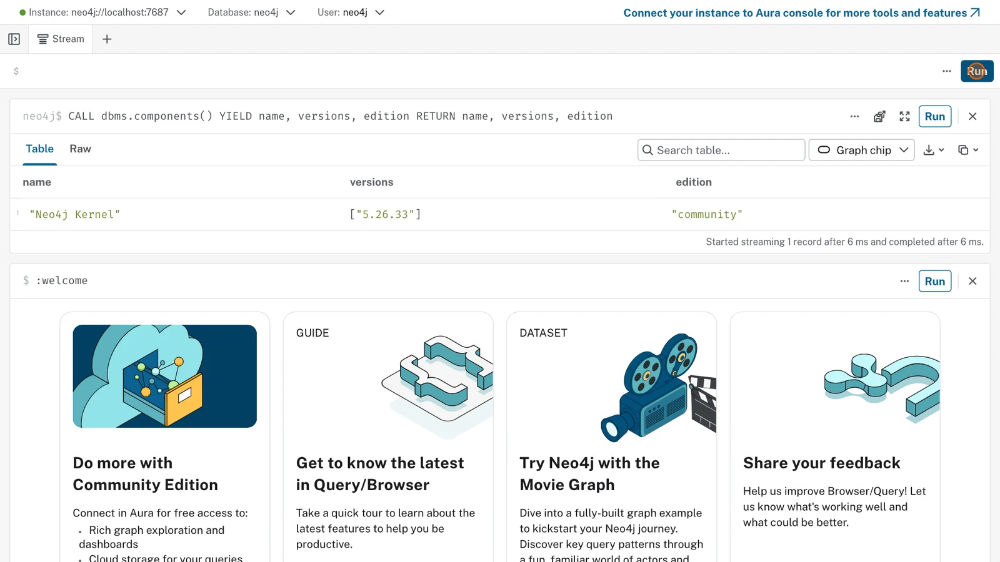

Docker로 APOC 플러그인을 활성화하고 메모리 상한을 설정해 Neo4j 5.26 Community를 실행합니다. 비밀번호는 화면에 보이지 않게 입력해 환경변수와 .env 파일로 전달하고, 로그·cypher-shell·Neo4j Browser로 준비가 끝났는지 확인합니다.
무엇을 · 왜#
이 교재의 그래프 DB는 Docker 컨테이너 하나로 띄운 Neo4j 5.26 Community입니다. 이미지 태그(neo4j:5.26)로 5.26 버전을 선택하고(내려받는 날에 따라 5.26.33의 마지막 자리는 달라질 수 있습니다), DB 파일은 실습 폴더 안의 neo4j/data에 두어 컨테이너를 지우고 다시 만들어도 데이터가 남게 합니다.
컨테이너를 띄울 때 세 가지를 함께 정합니다.
- APOC 플러그인 — 8장에서 연결하는 Neo4j MCP 서버의
get-schema도구가 APOC의apoc.meta.schema로 스키마를 읽습니다. 지금 켜 두면 나중에 컨테이너를 다시 만들 필요가 없습니다. - 메모리 상한 — 노트북에서 다른 프로그램과 함께 쓰므로 자바 힙·페이지 캐시와 컨테이너 전체 메모리에 상한을 둡니다. 이 교재의 데이터(최종 노드 6,818개·관계 18,643개)로 이 상한 안에서 모든 장의 실습을 마쳤습니다.
- 비밀번호 — 각자 정한 값을 화면과 명령 기록에 남기지 않습니다. 같은 값을 6장의 파이썬 코드와 8장의 MCP 서버가
.env파일과 환경변수로 받습니다.
이 교재의 바탕이 된 PBL 특강 교재(Ch.4)에서는 Neo4j Desktop을 설치했지만, 여기서는 같은 Neo4j를 Docker로 띄웁니다.
따라 하기#
- 실습 폴더를 git 저장소로 만듭니다. 이 폴더(
law-graph)에서 5장부터 Claude Code를 열고 단계마다 커밋합니다..gitignore에는 비밀번호가 담긴.env, 8장의.mcp.json, DB 파일 폴더neo4j/, 파이썬 가상환경, Claude Code 개인 설정을 넣습니다.mkdir -p law-graph && cd law-graph git init printf '.env\n.mcp.json\nneo4j/\n.venv/\n__pycache__/\n.claude/settings.local.json\n' > .gitignore cat .gitignore git add .gitignore && git commit -qm "실습 폴더 시작"git init은 한국어 환경에서 「…/.git/ 안의 빈 깃 저장소를 초기화했습니다」를 출력합니다. 이 기록에서도.gitignore커밋이 실습 폴더의 첫 커밋이었습니다. - Docker를 확인하고 이미지를 받습니다. Docker Desktop이 켜져 있어야 합니다. 이 기록에서는 Docker 29.1.2를 사용했고,
neo4j:5.26태그로 Neo4j 5.26.33 Community 이미지를 받았습니다.docker --version docker pull neo4j:5.26Docker version 29.1.2, build 890dcca 5.26: Pulling from library/neo4j Digest: sha256:c5fd91e41d44858ea678813fd53f8e60602e771a7656c502385247ffbcb0aec0 Status: Downloaded newer image for neo4j:5.26 docker.io/library/neo4j:5.26 - 비밀번호를 정해 환경변수와 .env로 전달합니다.
read -s는 입력한 글자를 화면에 보여 주지 않습니다. macOS 기본 셸(zsh)과 bash는 문법이 조금 다릅니다..env는 6장의ingest.py가 읽는 파일로, 1단계에서 git 추적 대상에서 제외했습니다.새 터미널을 열면 환경변수가 사라집니다. 그때는 실습 폴더에서# zsh read -s "NEO4J_PASSWORD?Neo4j 비밀번호: " && export NEO4J_PASSWORD && echo # bash 라면 대신: read -s -p "Neo4j 비밀번호: " NEO4J_PASSWORD && export NEO4J_PASSWORD && echo printf 'NEO4J_PASSWORD=%s\n' "$NEO4J_PASSWORD" > .env mkdir -p neo4j/data neo4j/logsset -a; . ./.env; set +a한 줄로.env의 값을 환경변수로 다시 설정합니다(8장에서도 사용합니다). - 컨테이너를 실행합니다. 줄 끝의
\는 한 명령을 여러 줄로 나눠 쓴다는 뜻입니다. 실행하면 컨테이너 ID가 한 줄로 출력됩니다.docker run -d --name graphrag-law-neo4j \ -p 7474:7474 -p 7687:7687 \ -e NEO4J_AUTH=neo4j/$NEO4J_PASSWORD \ -e NEO4J_PLUGINS='["apoc"]' \ -e NEO4J_server_memory_heap_initial__size=512m \ -e NEO4J_server_memory_heap_max__size=1G \ -e NEO4J_server_memory_pagecache_size=512M \ --memory 2g \ -v "$PWD/neo4j/data:/data" -v "$PWD/neo4j/logs:/logs" \ neo4j:5.26
옵션별 설명#
| 옵션 | 뜻 |
|---|---|
-d · --name |
백그라운드에서 실행하고 이름(graphrag-law-neo4j)을 붙입니다. 이후 logs·exec·stats가 모두 이 이름을 씁니다 |
-p 7474:7474 |
HTTP 포트. 웹 화면 Neo4j Browser(http://localhost:7474) |
-p 7687:7687 |
Bolt 포트. cypher-shell, 파이썬 드라이버(6장), Neo4j MCP 서버(8장)가 접속하는 곳(bolt://localhost:7687) |
NEO4J_AUTH |
사용자 neo4j의 초기 비밀번호(neo4j/비밀번호). 셸이 $NEO4J_PASSWORD 값을 채우므로 명령 기록에는 변수 이름만 남습니다 |
NEO4J_PLUGINS |
'["apoc"]'로 APOC 플러그인을 켭니다. 로그를 보면 이미지 안의 labs 폴더에서 jar를 복사하므로 따로 내려받지 않습니다 |
…heap_initial__size…heap_max__size |
자바 힙의 초기(512m)·최대(1G) 크기입니다. server.memory.heap.max_size 등의 설정을 환경변수 이름으로 바꾼 것으로, 앞에 NEO4J_server_memory_가 붙습니다(.는 _, _는 __) |
…pagecache_size |
페이지 캐시(512M). 그래프 파일을 메모리에 올려 두는 공간의 크기입니다 |
--memory 2g |
컨테이너 전체의 메모리 상한(Docker). 힙 1G + 페이지 캐시 512M에 여유를 둔 값입니다 |
-v …/neo4j/data:/data-v …/neo4j/logs:/logs |
DB 파일과 로그를 실습 폴더($PWD)에 둡니다. 컨테이너를 지워도 남습니다 |
neo4j:5.26 |
2단계에서 받은 이미지 |
비밀번호가 보이는 곳
화면과 명령 기록에는 비밀번호가 남지 않지만, .env 파일과 컨테이너 설정(docker inspect로 보는 환경변수)에는 값이 들어 있습니다. 여러 사람이 쓰는 PC라면 실습용으로만 쓰는 비밀번호를 정하세요.
Windows(PowerShell)에서 달라지는 줄 — 확인 못 함
이 교재의 실습은 macOS(zsh)에서만 기록했습니다. 아래는 PowerShell에서 수정해야 할 것으로 보이는 줄이며, 실제로 실행해 확인하지 못했습니다.
- 여러 줄 명령의 줄 끝
\→ 백틱` - 비밀번호 입력:
$s = Read-Host -AsSecureString "Neo4j 비밀번호"다음$env:NEO4J_PASSWORD = [System.Net.NetworkCredential]::new('', $s).Password -e NEO4J_AUTH=neo4j/$NEO4J_PASSWORD→-e "NEO4J_AUTH=neo4j/$env:NEO4J_PASSWORD"-v "$PWD/neo4j/data:/data"→-v "${PWD}/neo4j/data:/data".env쓰기:Set-Content -Encoding ascii .env "NEO4J_PASSWORD=$env:NEO4J_PASSWORD"(Windows PowerShell 5.1의Out-File -Encoding utf8은 파일 앞에 BOM을 붙여.env를 읽는 프로그램이 첫 줄을 인식하지 못할 수 있습니다)-e NEO4J_PLUGINS='["apoc"]': Windows PowerShell 5.1은 외부 명령에 전달하는 인자의 큰따옴표를 누락하는 경우가 있어'[\"apoc\"]'처럼 써야 할 수 있습니다
문제가 생기면 부록 문제 해결의 예외 상황을 보세요.
확인#
세 가지 방법으로 확인합니다. 모두 확인되면 다음 장으로 넘어갑니다.
1. 로그에 Started.가 나오는지#
docker logs -f graphrag-law-neo4j # "Started." 가 나오면 Ctrl+C 로 빠져나옵니다
Warning: Folder mounted to "/logs" is not writable from inside container. Changing folder owner to neo4j.
Warning: Folder mounted to "/data" is not writable from inside container. Changing folder owner to neo4j.
Installing Plugin 'apoc' from /var/lib/neo4j/labs/apoc-*-core.jar to /var/lib/neo4j/plugins/apoc.jar
Applying default values for plugin apoc to neo4j.conf
Changed password for user 'neo4j'. IMPORTANT: this change will only take effect if performed before the database is started for the first time.
… INFO Starting...
… INFO ======== Neo4j 5.26.33 ========
… INFO Bolt enabled on 0.0.0.0:7687.
… INFO HTTP enabled on 0.0.0.0:7474.
… INFO Remote interface available at http://localhost:7474/
… INFO Started.
(시각과 서버 ID 줄은 …로 줄였습니다.) 처음 두 줄의 Warning은 마운트한 폴더의 소유자를 컨테이너 안의 neo4j 사용자로 바꿨다는 안내이며, 이 기록에서는 그대로 진행해도 문제가 없었습니다. Starting...부터 Started.까지 4.6초 걸렸습니다.
2. cypher-shell로 버전과 APOC 확인#
컨테이너 안에 들어 있는 명령줄 도구 cypher-shell로 Bolt 포트에 접속해 봅니다. 문장 끝의 ;를 빠뜨리지 마세요.
docker exec graphrag-law-neo4j cypher-shell -u neo4j -p "$NEO4J_PASSWORD" \
"CALL dbms.components() YIELD name, versions, edition RETURN name, versions, edition;"
docker exec graphrag-law-neo4j cypher-shell -u neo4j -p "$NEO4J_PASSWORD" "RETURN apoc.version() AS apoc;"
docker stats --no-stream graphrag-law-neo4j
name, versions, edition
"Neo4j Kernel", ["5.26.33"], "community"
apoc
"5.26.33"
CONTAINER ID NAME CPU % MEM USAGE / LIMIT MEM % NET I/O BLOCK I/O PIDS
8953f7929eef graphrag-law-neo4j 0.62% 926.4MiB / 2GiB 45.23% 1.6kB / 1.01kB 237MB / 206MB 87
MEM USAGE / LIMIT의 2GiB는 --memory 2g로 설정한 상한이 적용되었다는 뜻입니다. 이 교재의 모든 장(의미층 적재와 질의까지)을 마친 뒤에도 같은 컨테이너의 메모리 사용량은 1.49GiB / 2GiB였습니다.
3. Neo4j Browser#
먼저 HTTP 포트가 응답하는지 확인합니다.
curl -s localhost:7474; echo
{"bolt_routing":"neo4j://localhost:7687","query":"http://localhost:7474/db/{databaseName}/query/v2","transaction":"http://localhost:7474/db/{databaseName}/tx","bolt_direct":"bolt://localhost:7687","neo4j_version":"5.26.33","neo4j_edition":"community"}
웹 브라우저로 http://localhost:7474를 엽니다. 「Connect to instance」 창에 연결 주소 neo4j://localhost:7687이 채워져 있습니다. Database user에 neo4j, Password에 정한 비밀번호를 입력하고 Connect를 누릅니다.

처음 접속하면 「Work in tabs」 안내 풍선이 뜹니다(Dismiss로 닫습니다). 위쪽 입력칸에 질의를 입력하고 Run을 누르면 결과가 아래에 쌓입니다.
CALL dbms.components() YIELD name, versions, edition
RETURN name, versions, edition

APOC의 스키마 프로시저가 있는지도 확인합니다. 이 기록에서는 apoc.meta.schema를 포함해 10개가 조회되었습니다.
SHOW PROCEDURES YIELD name WHERE name STARTS WITH "apoc.meta"
RETURN name
멈추기 · 다시 켜기 · 지우기#
| 하려는 일 | 명령 | 데이터 |
|---|---|---|
| 멈추기 | docker stop graphrag-law-neo4j |
neo4j/data에 그대로 |
| 다시 켜기 | docker start graphrag-law-neo4j |
멈추기 전 그대로 |
| 컨테이너만 지우기 | docker rm -f graphrag-law-neo4j |
neo4j/data에 남습니다. 4단계의 docker run으로 다시 만들면 이어서 사용합니다 |
| 처음부터 다시 | 컨테이너를 지운 뒤 rm -rf neo4j/data neo4j/logs |
모두 사라짐 |
neo4j/data를 남긴 채 다른 비밀번호로 docker run을 다시 하면, 로그의 Changed password … only take effect if performed before the database is started for the first time.라는 문구대로 새 비밀번호가 적용되지 않을 수 있습니다(이 기록에서는 시도하지 않아 확인하지 못했습니다). 비밀번호를 바꾸려면 처음부터 다시 만드는 편이 확실합니다.
막히면
이 장의 실습 단계에서는 학습자도 겪을 만한 문제가 기록되지 않았습니다. 포트 7474·7687 충돌, Docker 메모리 부족, 이미지 내려받기 실패, Windows 경로처럼 이 기록에서 겪지 않은 상황은 부록 문제 해결의 「예외 상황」에 확인 여부와 함께 모아 두었습니다.
확인 문제#
7474 포트와 7687 포트는 각각 누가 쓰나요?
7474는 HTTP 포트로 웹 화면인 Neo4j Browser가 씁니다. 7687은 Bolt 포트로 cypher-shell, 6장의 파이썬 드라이버(bolt://localhost:7687), 8장의 Neo4j MCP 서버가 씁니다. Neo4j Browser도 로그인한 뒤에는 질의를 Bolt(neo4j://localhost:7687)로 보냅니다.
APOC 플러그인을 켜려고 인터넷에서 무엇을 더 내려받았나요?
없습니다. 로그의 Installing Plugin 'apoc' from /var/lib/neo4j/labs/apoc-*-core.jar to /var/lib/neo4j/plugins/apoc.jar처럼 이미지 안의 labs 폴더에 있는 jar를 plugins 폴더로 복사합니다. 이미지를 받은 뒤라면 APOC를 위해 추가로 네트워크에 접속할 필요는 없습니다.
컨테이너를 지우고 다시 만들어도 적재한 데이터가 남는 까닭은 무엇인가요?
-v "$PWD/neo4j/data:/data"로 컨테이너 안의 DB 폴더(/data)를 실습 폴더의 neo4j/data에 연결했기 때문입니다. 데이터는 컨테이너가 아니라 이 폴더에 쓰입니다. 그래서 .gitignore에 neo4j/를 넣어 커밋 대상에서 제외했습니다.